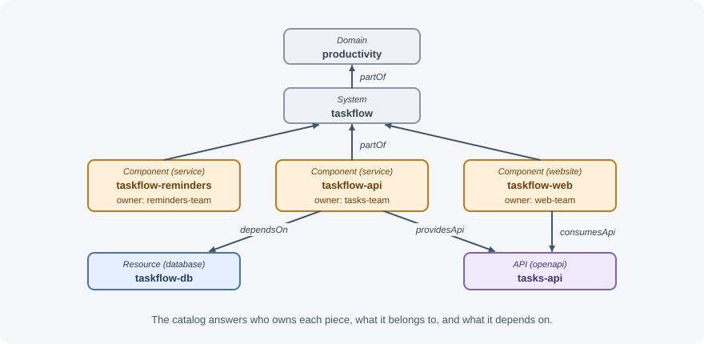

Platform Engineering and Developer Portals¶
"You build it, you run it" asks a lot of every team: pipelines, infrastructure, monitoring, security scanning, secrets, documentation. When ten teams each solve all of that alone, the organization pays ten times for the same work and gets ten slightly different answers. Platform engineering builds the shared answers once, as an internal product that teams use by choice because it is the easiest way to do the right thing.
This lesson explains what an internal developer platform is and how it is layered, golden paths and paved roads, self-service instead of tickets, the Backstage developer portal and its software catalog and templates, running a platform as a product, measuring whether it works, and when a small team should not build a platform at all. The examples register TaskFlow in a catalog, scaffold a new service from a template, share one pipeline as a reusable workflow, and check every repository against the golden path.
Why it matters¶
The more a team owns, the more it has to know. A product team that must also become expert in Kubernetes, cloud networking, CI runners, and security policy spends its attention on infrastructure instead of users. Team Topologies calls this cognitive load; DORA's platform engineering capability says a platform's primary goal is to reduce it by "abstracting away underlying complexity".
Platforms also cut the hidden cost of fragmentation. When every service deploys, logs, and stores secrets differently, a security fix takes months to reach all of them, and moving between teams means relearning everything. A shared, well-run path changes that. But platforms fail in predictable ways too, and DORA's 2024 research found that the same platforms that raise productivity can lower delivery throughput and change stability when they add handoffs or force a poor fit. Building one well is product work, not just infrastructure work.
Real-world usage¶
- Netflix's paved road. In Full Cycle Developers at Netflix (2018), Netflix describes centralized teams that "act as force multipliers by turning their specialized knowledge into reusable building blocks", and a "paved road" of tools and practices that is not mandated: adoption is encouraged "by ensuring that development and operations using those technologies is a far better experience than not using them." Netflix's infrastructure itself is one of the case studies in how top companies run at scale.
- Spotify's golden paths. Spotify's 2020 post How We Use Golden Paths to Solve Fragmentation in Our Software Ecosystem defines the Golden Path as "the 'opinionated and supported' path to 'build something'", created to replace what it called "rumour-driven development".
- Backstage. Spotify open-sourced its developer portal in March 2020 (announcement), reporting a 55% decrease in onboarding time, measured as time until a new engineer's 10th pull request. According to the CNCF project page, Backstage was accepted to the CNCF on September 8, 2020 and moved to the Incubating maturity level on March 15, 2022.
- CNCF Platforms White Paper. The white paper from CNCF's TAG App Delivery defines a platform as "an integrated collection of capabilities defined and presented according to the needs of the platform's users", lists the attributes of a good platform, and proposes ways to measure one.
- DORA's research. The 2024 Accelerate State of DevOps Report found internal developer platform users had 8% higher individual productivity and 10% higher team performance, alongside 8% lower throughput and 14% lower change stability, and DORA's capability page reports that by 2025, 90% of organizations used an internal developer platform.
Popular tools and providers: developer portals such as Backstage (open source) and commercial portals such as Port, Cortex, and OpsLevel; platform building blocks such as Kubernetes, Argo CD, Crossplane, Terraform, and OpenTofu; and GitHub Actions reusable workflows or GitLab CI templates for shared pipelines.
How it works¶
What an internal developer platform is¶
Three definitions, from different angles:
- DORA: platform engineering designs and builds "toolchains and workflows, often called an 'Internal Developer Platform', that provide shared, high-quality tools, services, and 'golden paths'", treated as "an internal product designed specifically for developers."
- CNCF: "an integrated collection of capabilities defined and presented according to the needs of the platform's users", offered through consistent experiences such as "Web portals, project templates, and self-service APIs."
- Evan Bottcher (2018), What I Talk About When I Talk About Platforms: "A digital platform is a foundation of self-service APIs, tools, services, knowledge and support which are arranged as a compelling internal product."
The common thread is product: users, a roadmap, support, and a reason to choose it. A pile of Terraform modules that only the platform team can run is infrastructure, not a platform.
The layers of a platform¶
![Diagram: four layers; product teams at the top, the tasks, web, and reminders teams, who use the platform; interfaces, how they use it: a developer portal, a CLI and APIs, golden paths, and docs and support; capabilities, what it offers: CI/CD pipelines, environments and databases, observability, secrets and identity, and policy and security checks; providers at the bottom, what it is built on: a cloud provider, Kubernetes or a managed runtime, and SaaS tools; a dashed outline marks the interfaces and capabilities layers as what the platform team builds and runs as a product.](../platform-layers.svg)
The CNCF white paper is explicit that a platform team "doesn't necessarily run compute, network, storage or other services", and that it "should rely on externally-provided services and capabilities as much as possible". The platform's value is in the top two layers: consistent interfaces and well-integrated capabilities. A very small platform can be nothing more than, in the paper's words, "a wiki page with links to standard operating procedures to provision capabilities from providers."
The paper's attributes of a good platform make a useful checklist:
| Attribute | What it means | TaskFlow example |
|---|---|---|
| Platform as a product | Built from users' needs, prioritizing the most common use cases | The deploy path every service uses comes first; exotic needs later |
| User experience | Consistent interfaces where users already work: portal, CLI, IDE, API | platform db create and a portal form call the same API |
| Documentation and onboarding | Docs, examples, and templates that bundle a "golden path" | A new service is scaffolded with CI, dashboards, and an SLO document |
| Self-service | Capabilities requested and delivered "autonomously and automatically" | A database arrives in minutes, not after a ticket |
| Reduced cognitive load | Hides implementation details; users do not operate platform services | Teams never manage the database servers, only their schemas |
| Optional and composable | Teams can use parts of it, and go outside it when needed | A team that needs a graph database can run one itself |
| Secure by default | Compliance and validation built in | Encryption, backups, least-privilege access, and pipeline security checks are defaults |
Golden paths and paved roads¶
Spotify's golden path is "the 'opinionated and supported' path to 'build something' (for example, build a backend service, put up a website, create a data pipeline)." Its original internal write-up added: "If you are an adventurer you can of course leave the Golden Path and do your own thing, but then you will not have the same support." Netflix's paved road works the same way: supported tools that are "a far better experience than not using them", with no mandate.
Three lessons from those posts are worth copying:
- The path is the product; the tutorial only describes it. When engineers complained that the golden path tutorials were too long, Spotify's response was that the tutorials "just reflect the actual Golden Path. That's what we need to shorten."
- Check conformance, do not police it. Spotify's "Golden State" is "a list of checks that engineers can use to know if their systems are following the Golden Path", so teams can see where they stand.
- Avoid the golden cage. DORA lists a "one-size-fits-all" platform as a pitfall: a rigid "golden cage" that ignores the different needs of, say, data science and mobile teams.
Self-service instead of tickets¶
![Diagram: ticket-ops for a new database: the developer files a ticket, it waits about 2 working days in the queue, an engineer spends about 45 minutes on manual setup, and credentials are shared by chat before the app is configured, about 3 days per database, so 40 requests a month cost the platform team about 30 hours; self-service for the same request: the developer asks through a portal form or CLI, policy checks validate size, backups, and encryption, automated setup provisions it with infrastructure as code, and the secret is injected from the secret store, about 15 minutes with no platform engineer time per request; the platform team's time goes instead into building the self-service path once, improving it, and supporting users.](../ticket-ops-vs-self-service.svg)
DORA names the "ticket-ops" trap: a platform team that works like "a reactive 'vending machine' for infrastructure tickets" stays trapped in toil and becomes the bottleneck it was meant to remove. The worked numbers in the diagram are typical of the trade: 40 database requests a month at 45 minutes each is 30 hours of platform engineers' time, plus about three days of waiting for each requesting team. Building the self-service path costs engineering time once; after that, each request costs minutes and no platform engineer at all, and the defaults (backups, encryption, tagging) are applied every time instead of when someone remembers.
DORA's 2024 data supports the direction: when developers could complete their tasks without involving an enabling team, the report measured a 5% productivity improvement at both the individual and team level.
Backstage: catalog, templates, and docs¶
Backstage is "an open source framework for building developer portals", powered by a centralized software catalog. Out of the box it includes:
- Software Catalog: every component, API, resource, and owner in one
searchable place, described by
catalog-info.yamlfiles that live in each repository. - Software Templates: wizards that create new projects "with your organization's best practices", the usual way to encode golden paths.
- TechDocs: documentation written as Markdown next to the code ("docs like code") and rendered in the portal.
- Plugins: an ecosystem that brings CI status, deployments, costs, alerts, and other tools into the same interface.

The catalog's system model
has three core entities, components (individual pieces of software),
APIs (the boundaries between components), and resources (the
infrastructure a component needs, such as databases), plus systems
and domains to group them and users and groups to own them.
Every component's spec.owner names "the singular entity (commonly a
team) that bears ultimate responsibility for the component". That one
required field is what turns the catalog into an ownership map.
Backstage itself is a framework you assemble, deploy, and upgrade. Its adoption guide is direct about the organizational cost: "you will need a central team that owns your Backstage deployment and treats it like a product", with operations, support, and eventually on-call. For a small organization, that team usually costs more than the portal saves.
Platform as a product¶
DORA's capability page turns "platform as a product" into concrete advice:
- Assign a product manager and map critical user journeys, such as "spinning up a new service" or "debugging a production issue", to find the worst friction.
- Start with a minimum viable platform: identify "the golden path for the most common workflow" and make that one journey demonstrably better before building anything else. Team Topologies calls the same idea the Thinnest Viable Platform.
- Design for extensibility, so other teams can contribute tools and the platform team does not become a bottleneck.
- Prioritize clear feedback: in DORA's 2025 data, the platform capability most correlated with a positive user experience is giving "clear feedback on the outcome of my tasks".
And it lists the anti-patterns: "Build it and they will come" (no user research), the "Ivory tower" (rigid standards dictated from above), the "Ticket-ops" trap, the "Big bang" release, and the "one-size-fits-all" golden cage. The CNCF white paper adds that platform teams "that rely on top-down mandates to achieve adoption are almost certain to find resistance and resentment from their users". DORA's 2024 report saw this in the data: respondents required to use the platform exclusively for every lifecycle task reported a 6% decrease in throughput.
Measuring platform success¶
| What to measure | Example measures | Source of the idea |
|---|---|---|
| User satisfaction and productivity | Active users and retention, NPS or CSAT, SPACE-style measures | CNCF white paper; DORA |
| Organizational efficiency | Time from request to a usable database or environment; time to build and deploy a brand-new service; time for a new engineer's first change | CNCF white paper |
| Delivery outcomes of product teams | Change lead time, deployment frequency, recovery time, change fail rate, rework rate | DORA |
| Adoption and retention | Teams onboarding to the platform and continuing to use it | DORA, using the HEART framework |
| Onboarding and complexity | Time until a new engineer's 10th merged pull request; number of tools touched to ship one change | Backstage adoption guide |
Expect a dip. DORA describes a "J-curve" for platforms: early gains, a drop as complexity grows, then recovery to a higher level as the platform matures. Its 2024 report saw gains in productivity and organizational performance but losses in throughput and stability, and suggests one cause: more handoffs between systems as each change passes through more automated checks. Measure both sides, delivery speed and developer experience, and watch the trend rather than one quarter.
When a small team should not build a platform¶
Netflix's post includes its own warning: "many companies won't have the staffing to invest in centralized teams like at Netflix, nor will they need the complexity that Netflix's scale requires", and advises bringing "in the least complexity necessary."
![Diagram: a decision flowchart: if fewer than three teams repeat the same delivery work, not yet: a shared template repository, a wiki page, and managed services are enough; if three or more do and a managed product covers most of the need, adopt it, then add defaults, docs, and one golden path on top; if not, and you cannot staff the platform as a product, build the thinnest viable platform, one golden path owned part-time; if you can, build a platform as a product with user research, a minimum viable golden path, and adoption metrics.](../should-we-build-a-platform.svg)
Costs rise in this order, so start at the top and move down only when the need is proven:
- Cheapest: templates, a wiki page, and managed services. A shared template repository and the provider's managed databases, queues, and CI cost almost nothing to maintain. This is enough for one to three teams.
- Middle: a managed or commercial product with your defaults on top. You pay a subscription or usage fee instead of engineering time, and your effort goes into conventions and one golden path.
- Most expensive: a self-built platform and portal. Open-source tools such as Backstage carry no license fee, but the platform needs a dedicated team to build, upgrade, support, and be on call for it. That ongoing staffing is the largest cost, so it pays off only when many teams share the need.
When to use and when not to use¶
| Situation | Recommendation |
|---|---|
| One or two product teams | No platform team: shared templates, managed services, good READMEs |
| Several teams repeat the same pipeline, infrastructure, and monitoring work | A thin platform: one golden path for the most common service type, owned by a small team |
| Dozens of teams, many services, nobody knows who owns what | A software catalog first; ownership data pays off before any templates |
| Strong compliance or security requirements across many services | Secure defaults in the platform (policy checks, encryption, audit) instead of manual reviews |
| A platform already exists but nobody uses it | User research and task-success measures before any new features; remove mandates |
| Highly diverse teams (data science, mobile, backend) | Composable capabilities and several golden paths, not one rigid path |
Practical examples¶
Register TaskFlow in the software catalog¶
Each repository describes its own entities. One file may hold several
entities separated by ---, as Backstage's file format allows:
# catalog-info.yaml (in the taskflow-api repository)
apiVersion: backstage.io/v1alpha1
kind: Component
metadata:
name: taskflow-api
description: Task API for TaskFlow (Express and MongoDB)
annotations:
github.com/project-slug: example/taskflow-api
backstage.io/techdocs-ref: dir:.
tags:
- nodejs
- express
links:
- url: https://grafana.example.com/d/taskflow-slo
title: SLO dashboard
icon: dashboard
- url: https://runbooks.example.com/taskflow-api
title: Runbooks
spec:
type: service
lifecycle: production
owner: tasks-team
system: taskflow
dependsOn:
- resource:default/taskflow-db
providesApis:
- tasks-api
---
apiVersion: backstage.io/v1alpha1
kind: API
metadata:
name: tasks-api
description: REST API for creating and listing tasks
spec:
type: openapi
lifecycle: production
owner: tasks-team
system: taskflow
definition:
$text: ./openapi.yaml
---
apiVersion: backstage.io/v1alpha1
kind: Resource
metadata:
name: taskflow-db
description: MongoDB replica set that stores tasks
spec:
type: database
owner: tasks-team
system: taskflow
The parts: spec.type, spec.lifecycle (experimental, production,
or deprecated are the well-known values), and spec.owner are
required for a component. owner: tasks-team is a short entity
reference that defaults to a Group. The github.com/project-slug
annotation lets plugins find the repository, and
backstage.io/techdocs-ref: dir:. tells TechDocs to build documentation
from this repository. The API's definition uses the $text
substitution to load the OpenAPI file from the same folder, so the spec
is not duplicated.
Scaffold a new service from a golden-path template¶
# templates/node-service/template.yaml: golden path for a new Node.js service
apiVersion: scaffolder.backstage.io/v1beta3
kind: Template
metadata:
name: node-service
title: Node.js service (golden path)
description: Express service with CI/CD, an SLO document, dashboards, and on-call wiring
spec:
owner: platform-team
type: service
parameters:
- title: Service details
required: [name, owner]
properties:
name:
title: Name
type: string
description: Lowercase and dash-separated, for example taskflow-reminders
owner:
title: Owner
type: string
ui:field: OwnerPicker
ui:options:
catalogFilter:
kind: Group
- title: Repository
required: [repoUrl]
properties:
repoUrl:
title: Repository location
type: string
ui:field: RepoUrlPicker
ui:options:
allowedHosts:
- github.com
steps:
- id: fetch
name: Fetch the golden path skeleton
action: fetch:template
input:
url: ./skeleton
values:
name: ${{ parameters.name }}
owner: ${{ parameters.owner }}
- id: publish
name: Publish to GitHub
action: publish:github
input:
description: ${{ parameters.name }}, created from the node-service golden path
repoUrl: ${{ parameters.repoUrl }}
defaultBranch: main
- id: register
name: Register in the catalog
action: catalog:register
input:
repoContentsUrl: ${{ steps.publish.output.repoContentsUrl }}
catalogInfoPath: /catalog-info.yaml
output:
links:
- title: Repository
url: ${{ steps.publish.output.remoteUrl }}
- title: Open in catalog
icon: catalog
entityRef: ${{ steps.register.output.entityRef }}
# templates/node-service/skeleton/catalog-info.yaml: filled in by fetch:template
apiVersion: backstage.io/v1alpha1
kind: Component
metadata:
name: ${{ values.name }}
annotations:
backstage.io/techdocs-ref: dir:.
spec:
type: service
lifecycle: experimental
owner: ${{ values.owner }}
The parameters render as form steps in the portal; fetch:template
copies the skeleton/ folder and replaces ${{ values.* }} in every
file; publish:github creates the repository (it comes from the
@backstage/plugin-scaffolder-backend-module-github module); and
catalog:register adds the new service to the catalog with its owner.
The skeleton would also contain the pipeline caller shown next, an SLO
document, a README with runbook links, and .nvmrc, so a new service
starts on the golden path instead of drifting toward it later.
Share one pipeline as a reusable workflow¶
The platform team owns the pipeline once; each service calls it:
# platform-workflows/.github/workflows/node-service.yml: the shared golden-path pipeline
name: Node service
on:
workflow_call:
inputs:
service:
description: Service name used for deploys and metrics
required: true
type: string
node-version:
required: false
type: string
default: "24"
permissions:
contents: read
jobs:
test:
runs-on: ubuntu-latest
steps:
- uses: actions/checkout@v7
- uses: actions/setup-node@v7
with:
node-version: ${{ inputs.node-version }}
cache: npm
- run: npm ci
- run: npm run lint --if-present
- run: npm test
deploy:
needs: test
if: github.ref == 'refs/heads/main'
runs-on: ubuntu-latest
environment: production
concurrency:
group: deploy-${{ inputs.service }}
cancel-in-progress: false
steps:
- uses: actions/checkout@v7
- run: ./scripts/deploy.sh "$GITHUB_SHA"
env:
SERVICE: ${{ inputs.service }}
# .github/workflows/deliver.yml (in the taskflow-reminders repository)
name: Deliver
on:
push:
branches: [main]
pull_request:
jobs:
pipeline:
uses: example/platform-workflows/.github/workflows/node-service.yml@v1
with:
service: taskflow-reminders
secrets: inherit
A reusable workflow is declared with on: workflow_call and referenced
as {owner}/{repo}/.github/workflows/{filename}@{ref}. Pinning to a tag
such as v1 lets the platform team ship compatible improvements to
every service at once; GitHub's documentation notes that a commit SHA is
the safest reference if you need exact reproducibility. secrets:
inherit passes the caller's secrets through, including environment
secrets for the production environment. The deploy job runs only on
main, so pull requests get tests but never deploy.
Check every repository against the golden path¶
A small "golden state" check, in the spirit of Spotify's, shows each team where it stands:
// scripts/golden-state.js: check service repositories against the golden path
// Usage: node scripts/golden-state.js <repo dir> [<repo dir> ...]
import { existsSync, readFileSync, readdirSync } from "node:fs";
import { basename, join } from "node:path";
const read = (dir, file) => (existsSync(join(dir, file)) ? readFileSync(join(dir, file), "utf8") : "");
const workflows = (dir) => {
const wf = join(dir, ".github", "workflows");
return existsSync(wf) ? readdirSync(wf).map((f) => readFileSync(join(wf, f), "utf8")).join("\n") : "";
};
const checks = [
["catalog entry with an owner", (d) => /^\s+owner:\s*\S+/m.test(read(d, "catalog-info.yaml"))],
["CODEOWNERS", (d) => existsSync(join(d, ".github", "CODEOWNERS"))],
["Node.js 24", (d) => read(d, ".nvmrc").trim() === "24"],
["platform pipeline", (d) => /uses: example\/platform-workflows\/\.github\/workflows\/node-service\.yml@/.test(workflows(d))],
["SLO document", (d) => existsSync(join(d, "docs", "slo"))],
["runbook link", (d) => /runbook/i.test(read(d, "README.md"))],
];
let missing = 0;
for (const dir of process.argv.slice(2)) {
const failed = checks.filter(([, test]) => !test(dir)).map(([name]) => name);
missing += failed.length;
const score = `${checks.length - failed.length}/${checks.length}`;
console.log(`${basename(dir).padEnd(20)} ${score}${failed.length ? ` missing: ${failed.join(", ")}` : ""}`);
}
process.exitCode = missing ? 1 : 0;
Run against three checked-out repositories:
$ node scripts/golden-state.js repos/*
taskflow-api 6/6
taskflow-reminders 2/6 missing: catalog entry with an owner, CODEOWNERS, platform pipeline, runbook link
taskflow-web 4/6 missing: Node.js 24, SLO document
The reminders service, built before the golden path existed, has its own pipeline and no registered owner; the web app only needs a runtime upgrade and an SLO document. Publishing these results (on the portal or in a weekly summary) works better than mandates: teams see the gap, and the platform team learns which checks are hardest to meet and makes those steps easier. The script exits with a non-zero code when anything is missing, so it can also run in CI as a warning.
Best practices¶
- Start from user research: map the journeys developers struggle with most, and fix the most common one first.
- Treat the platform as a product with an owner, a roadmap, support, and published measures.
- Make the golden path the easiest path, and keep it optional; earn adoption instead of mandating it.
- Prefer managed services and existing tools; build only the thin layer of interfaces and defaults that is specific to your organization.
- Offer self-service through APIs first, with portals and CLIs on top.
- Put ownership in the catalog from day one: every component has an owning team.
- Encode best practices in templates and shared workflows, and version them so improvements reach every service.
- Measure delivery outcomes and developer experience together, and expect a J-curve.
In production¶
- The new portal launched and almost nobody uses it. Detect: low weekly active users and few templates run after the launch announcement. Cause: "build it and they will come": features chosen without user research, solving problems teams do not have. Fix: interview teams, pick the most painful journey, ship a minimal golden path for it, and measure task success.
- The platform team's backlog is all provisioning tickets. Detect: most work items are "create X for team Y" and requests wait days. Cause: ticket-ops instead of self-service. Fix: automate the three most frequent requests behind an API or template, then measure time from request to use.
- Throughput dropped after everyone moved to the platform. Detect: lead time and deployment frequency fell after a mandated migration, while developer surveys report more waiting. Cause: extra handoffs and a path that does not fit some teams, the pattern DORA's 2024 data showed for exclusive, mandatory use. Fix: remove the mandate, make the path composable, and find where changes now wait in the new pipeline.
- The catalog says one thing and reality another.
Detect: owners listed in the catalog no longer exist; services in
production are missing. Cause: catalog entries maintained by hand
in a central file. Fix: keep
catalog-info.yamlin each repository, register through templates, and add a golden-state check for a valid owner. - A security fix takes months to reach every service. Detect: weeks after a vulnerable base image is fixed, many services still run it. Cause: each team copied the pipeline instead of calling a shared one. Fix: move common steps into a versioned reusable workflow and track which services use which version.
- The self-hosted portal became a maintenance burden. Detect: the portal is several versions behind and plugin upgrades keep breaking; nobody is on call for it. Cause: a framework adopted without the central owning team its own guide calls for. Fix: staff it as a product, cut it back to the catalog and one template, or move to a managed option.
Important terminology¶
- Platform engineering: Building internal platforms as products that make software delivery self-service.
- Internal developer platform (IDP): The shared tools, services, and golden paths a platform team provides.
- Developer portal: The user interface to the platform, often built on Backstage: catalog, templates, docs.
- Golden path: The opinionated and supported way to build a common kind of software.
- Paved road: Netflix's term for its supported, recommended set of tools and practices.
- Thinnest viable platform: The smallest platform that makes teams faster.
- Self-service: Users get capabilities on demand, without tickets or waiting for another team.
- Software catalog: A registry of components, APIs, resources, systems, and their owners.
- Software template: A scaffolding definition that creates new projects with built-in best practices.
- Reusable workflow: A GitHub Actions workflow with
on: workflow_callthat other workflows can call. - Golden state: A list of checks showing whether a system follows the golden path.
- Ticket-ops: A platform team that fulfills requests manually instead of offering self-service.
Common mistakes and misconceptions¶
- Equating "platform" with Kubernetes, or with a developer portal.
- Building a platform before several teams share the same need.
- Mandating adoption instead of making the platform clearly better.
- Building capabilities that managed services already provide.
- Treating Backstage as a product you install rather than a framework that needs a team.
- Measuring the platform by features shipped rather than by users' outcomes.
- Allowing the golden path to become a golden cage with no exits.
- Keeping the catalog in a central spreadsheet instead of in each repository.
Revision questions¶
- Compare the DORA, CNCF, and Bottcher definitions of a platform. What do they all agree on?
- Explain golden paths and paved roads. Why are both described as supported but not mandatory?
- A platform team receives 60 environment requests a month at 30 minutes each. How many hours a month does that cost, and what changes with self-service? (30 hours a month of platform time; with self-service that time goes to improving the path instead, and teams stop waiting in a queue.)
- Name Backstage's main features and its core catalog entities. What
does
spec.owneradd? - What does DORA mean by a "minimum viable platform", and which anti-patterns does it warn about?
- DORA's 2024 report found platform users more productive but with lower throughput and stability. Give two plausible causes and how you would check them.
- Which measures would you use to show that a platform succeeded, and why include developer surveys as well as delivery metrics?
- A startup with two product teams wants to adopt Backstage. Using the cost drivers in this lesson, what would you advise instead, and when would you revisit the decision?
Further learning¶
- DORA: Platform engineering
- CNCF TAG App Delivery: Platforms White Paper and Platform Engineering Maturity Model
- Backstage: What is Backstage? and Writing templates
- Spotify: How We Use Golden Paths
- GitHub Docs: Reuse workflows
- Next: DevOps fundamentals interview questions and answers. Back to the DevOps fundamentals overview.